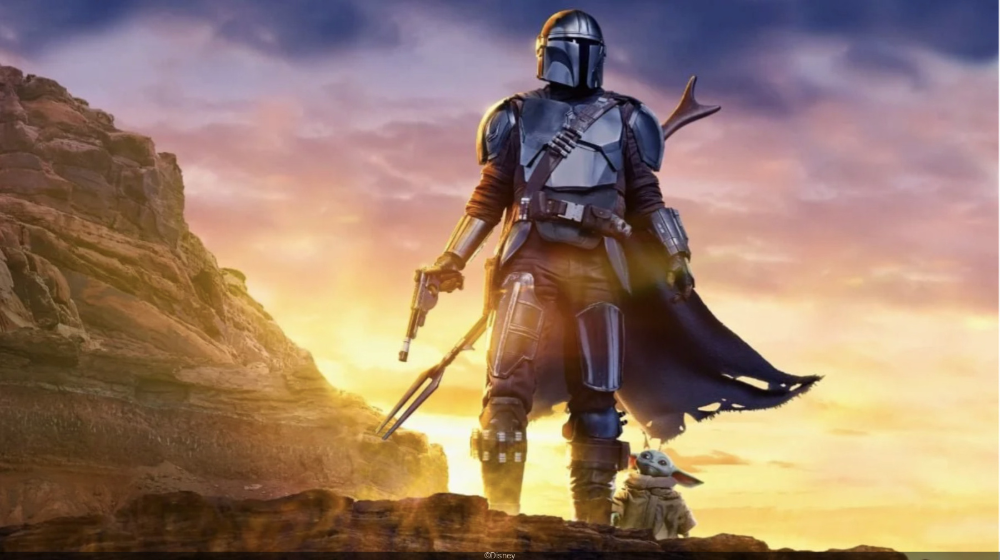
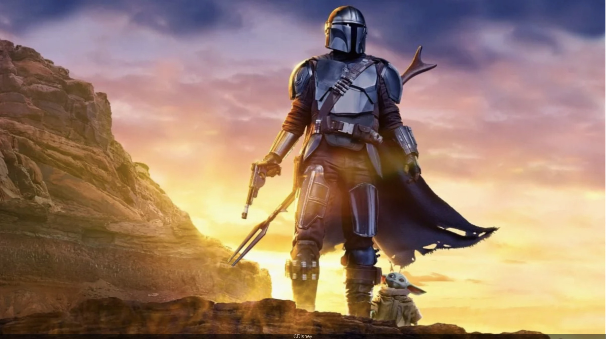

À propos de moi
Etudiant en BTS SIO

Etudiant en BTS SIO
Bonjour à toutes et à tous,
Je m’appelle Yohan Gounna, j’ai 18 ans et je suis actuellement en première année de BTS Services Informatiques aux Organisations au lycée Parc de Vilgénis.
Mon parcours a commencé par un baccalauréat professionnel Systèmes Numériques, option Réseaux Informatiques et Systèmes Communicants. C’est une formation très concrète, où j’ai appris à installer, configurer et sécuriser des réseaux, mais aussi à travailler sur du matériel et à résoudre des problèmes techniques. J’ai eu la chance de décrocher mon diplôme avec la mention Très Bien, ce qui a été une grande fierté pour moi et pour ma famille.
Ce choix d’orientation, je l’ai fait par passion pour l’informatique et les nouvelles technologies. Mais aussi parce que je crois que ce domaine est au cœur de notre monde d’aujourd’hui et de demain. Les réseaux, la cybersécurité, les systèmes connectés : tout cela fait partie de notre quotidien, et j’ai envie de contribuer à leur évolution.
Aujourd’hui, en BTS SIO, je découvre un autre aspect : celui du développement et de la gestion plus avancée des systèmes d’information. C’est un vrai challenge, mais je le vois comme une opportunité d’élargir mes compétences.
Mon parcours me montre qu’il n’y a pas qu’une seule voie vers la réussite. On peut commencer par une filière professionnelle, apprendre en faisant, puis continuer vers des études supérieures. Ce qui compte, ce n’est pas d’où l’on part, mais où l’on veut aller, et la détermination qu’on met pour y arriver.
Si j’avais un message à transmettre aujourd’hui, ce serait celui-ci : croyez en vos capacités, même si le chemin que vous prenez est différent de celui des autres. Chaque expérience, chaque étape, peut devenir une force.
Merci beaucoup.
 
